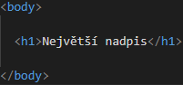
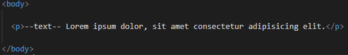

Kostra HTML se tvoří pomocí !DOCTYPE html což znamená že stránka bude vytvořena v HTML 5.
head je hlava kde bude title to je titulek stránky a bude tam taky meta charset="UTF-8" což zapříčiní že na stránce budou vidět české znaky a můžeme tam dát taky style
Do body dáme vše co chceme aby bylo vidět na stránce.
Za /body dáme tag /html jako končící tag.
Nadpis vytvoříme pomocí h1 až h6 (různé velikosti).
Odstavec vytvoříme pomocí p.
